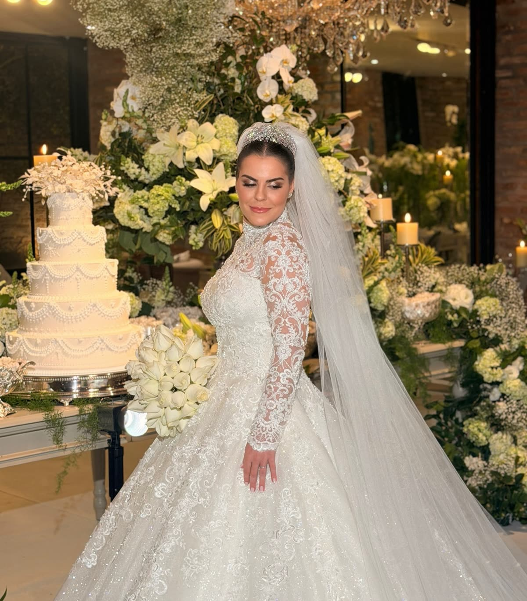

01 · Serviço
Noivas
Cabelo e maquiagem pensados junto com o vestido, as joias e o estilo da cerimônia. Tudo testado antes, para que no dia só exista emoção.
- Conversa de visagismo
- Teste de cabelo e maquiagem
- Produção no CAZA ou no local
- Acompanhamento até a entrada